Guía completa del tablero FMA Adoption Intelligence para Product Managers. Cubre instalación, acceso, navegación por las tres vistas y actualización de datos.
Se desarrolló el tablero FMA Adoption Intelligence ya que el equipo de Product de ServiceTitan requería una herramienta centralizada para monitorear, predecir y priorizar la migración de técnicos desde la plataforma TMA hacia FMA. El sistema consolida tres niveles de análisis en un solo entorno ya que la gestión de ~15.700 técnicos activos exige tanto una visión descriptiva del comportamiento de adopción como una capacidad predictiva que permita actuar con anticipación.
El tablero se diseñó para usuarios no técnicos ya que los principales destinatarios son Product Managers que toman decisiones de priorización sin necesidad de interpretar código ni modelos estadísticos. Toda la información se presenta en lenguaje de negocio ya que se busca reducir la fricción entre el análisis de datos y la acción operativa.
Se cubre el ciclo completo de adopción de FMA desde la primera sesión del técnico hasta los 60 días posteriores ya que ese es el período crítico de consolidación del hábito. Se analizan las primeras dos semanas de actividad ya que los patrones de uso en ese período son los predictores más fuertes de retención sostenida.
Se describe en este manual la instalación del sistema, el acceso al tablero y el uso de cada una de las tres vistas disponibles. Se incluyen también las preguntas frecuentes y un glosario de términos ya que se anticipa que algunos conceptos técnicos pueden requerir clarificación para usuarios no familiarizados con modelos predictivos.
Se requiere Python 3.10 o superior ya que las librerías utilizadas no son compatibles con versiones anteriores. Se recomienda seguir los cuatro pasos en el orden indicado ya que cada paso depende del anterior.
Se crea un entorno virtual aislado ya que esto evita conflictos con otras instalaciones de Python en el equipo.
Se activan las dependencias del proyecto ya que sin este paso el tablero no puede ejecutarse.
Se ejecuta el pipeline de datos ya que este paso transforma los datos fuente en los archivos que el tablero necesita para funcionar. La ejecución tarda aproximadamente 5 segundos con los datos de muestra incluidos.
Se lanza el tablero con el siguiente comando ya que Streamlit inicia un servidor local accesible desde el navegador.
Se abre automáticamente en http://localhost:8501. Se puede compartir el tablero en la red local usando la URL Network URL que imprime Streamlit en la terminal.
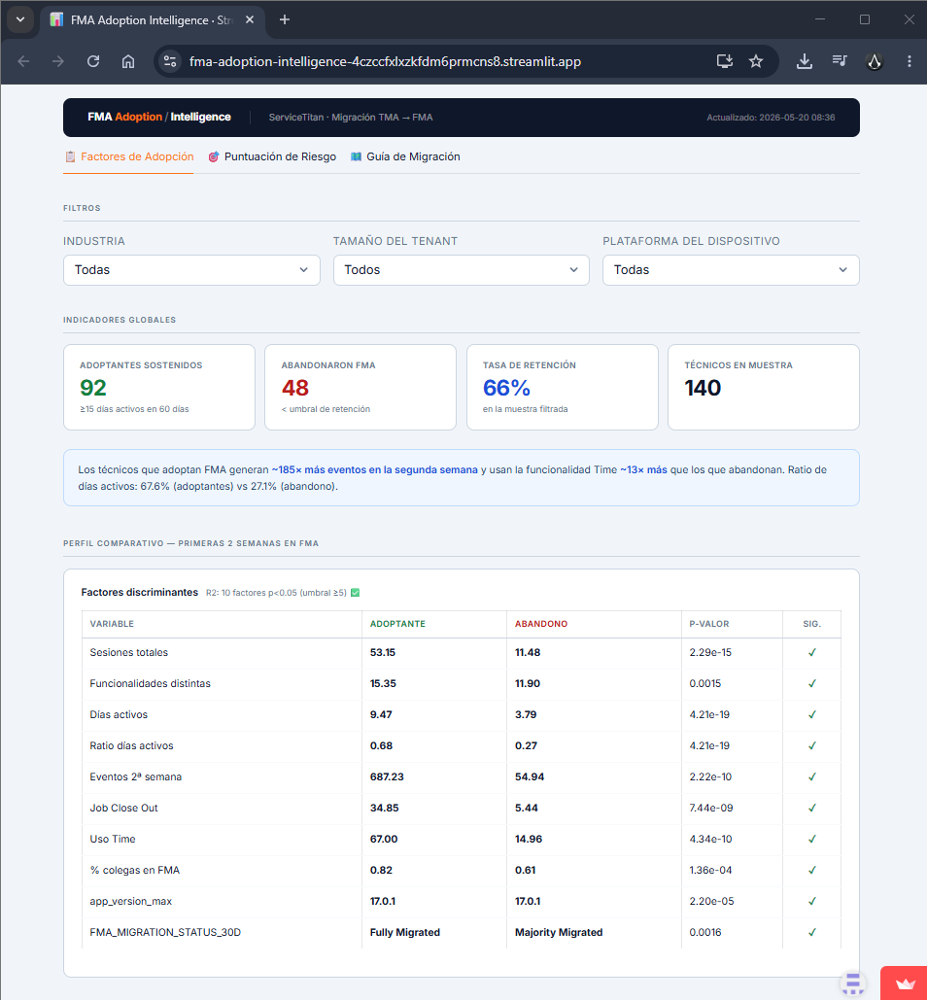
Se accede al tablero publicado en Streamlit Community Cloud a través de la URL proporcionada por el equipo ya que no se requiere instalación local. Se abre directamente desde cualquier navegador sin pasos adicionales.
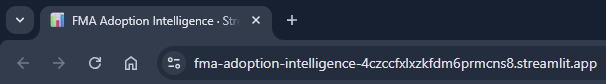
Se organiza el tablero en tres vistas accesibles mediante pestañas en la parte superior ya que cada vista responde a un tipo de pregunta diferente.
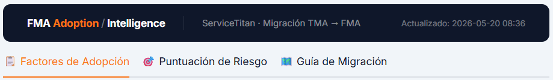
| Pestaña | Tipo de análisis | Pregunta que responde |
|---|---|---|
| Factores de Adopción | Descriptivo | ¿Qué comportamientos distinguen al técnico que adopta FMA de forma sostenida? |
| Puntuación de Riesgo | Predictivo | ¿Qué clientes tienen mayor riesgo de migración fallida? |
| Guía de Migración | Prescriptivo | ¿Qué acciones concretas se deben tomar por segmento de cliente? |
Se muestra en la barra superior la fecha de última actualización de los datos ya que permite al usuario verificar si el análisis refleja el estado actual de la migración.
Se utiliza esta vista para comprender qué comportamientos en las primeras dos semanas de uso distinguen a los técnicos que adoptan FMA de manera sostenida de los que abandonan ya que esta información guía las estrategias de onboarding y activación temprana.
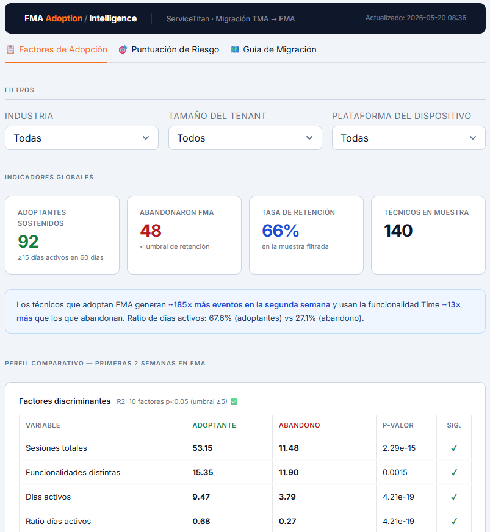
Se pueden aplicar tres filtros ya que el análisis de factores varía por tipo de cliente y dispositivo.
| Filtro | Efecto |
|---|---|
| Industria | Restringe el análisis a clientes de una industria específica ya que los patrones de adopción difieren entre sectores como HVAC, Plomería o Electricidad |
| Tamaño del tenant | Filtra por tamaño del cliente (Small, Medium, Large, Enterprise) |
| Plataforma del dispositivo | Filtra por sistema operativo del dispositivo ya que el comportamiento en iOS y Android puede presentar diferencias |
Se actualizan automáticamente todos los indicadores y gráficos al cambiar cualquier filtro ya que el tablero recalcula los resultados en tiempo real.
Se presentan cuatro métricas globales en la parte superior ya que ofrecen una lectura rápida del estado de adopción en la muestra filtrada.
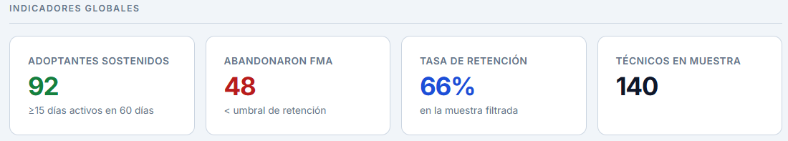
Se muestra un recuadro resumen con las diferencias más relevantes entre los dos grupos ya que sintetiza la información de la tabla comparativa en lenguaje de negocio. Los valores se actualizan automáticamente según los filtros aplicados.
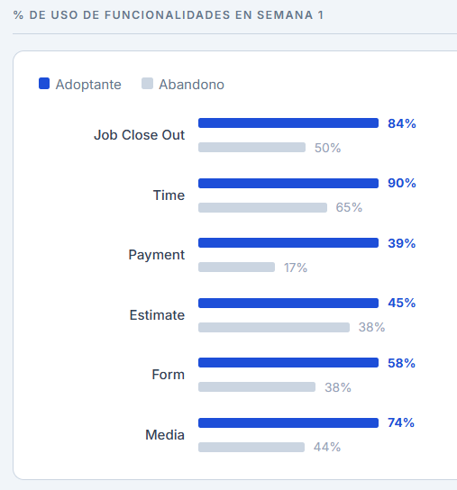
Se construye esta tabla para identificar qué variables diferencian estadísticamente a los técnicos que adoptan de los que abandonan ya que el análisis estadístico permite determinar cuáles factores son relevantes y cuáles son ruido.
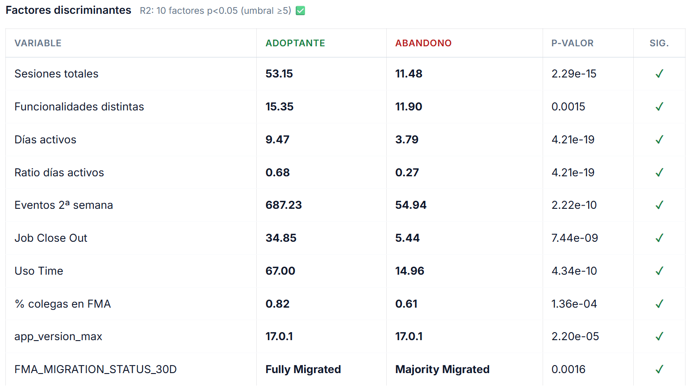
Se muestran los promedios de cada grupo ya que la comparación directa de medias permite identificar la magnitud de la diferencia. Se incluye el p-valor de cada variable ya que indica si la diferencia observada es estadísticamente significativa o producto del azar.
Se muestra el porcentaje de técnicos que utilizó cada funcionalidad en la semana 1 ya que el uso temprano de ciertas funcionalidades es un predictor fuerte de retención.
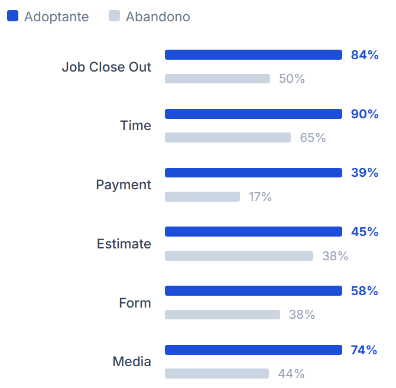
Se lee el gráfico comparando las barras de cada funcionalidad ya que las diferencias más grandes entre el grupo adoptante (azul) y el grupo abandono (gris) indican las funcionalidades críticas que se deben priorizar en el onboarding.
Se presenta el ranking de las 10 variables que más influyen en las predicciones del modelo ya que esta información orienta qué comportamientos deben activarse en los técnicos nuevos.
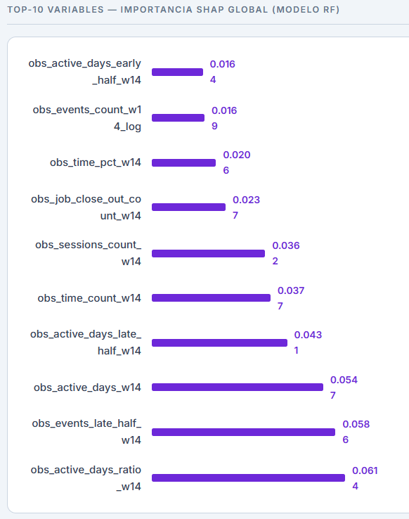
Se interpreta la longitud de cada barra como la importancia relativa de esa variable ya que el valor SHAP representa el impacto promedio de esa variable en la predicción del modelo. Las barras más largas indican los factores que más determinan si un técnico retiene o abandona FMA.
Se utiliza esta vista para identificar qué clientes requieren atención prioritaria ya que el modelo predice la probabilidad de retención de cada técnico y la agrega a nivel de cliente (tenant).
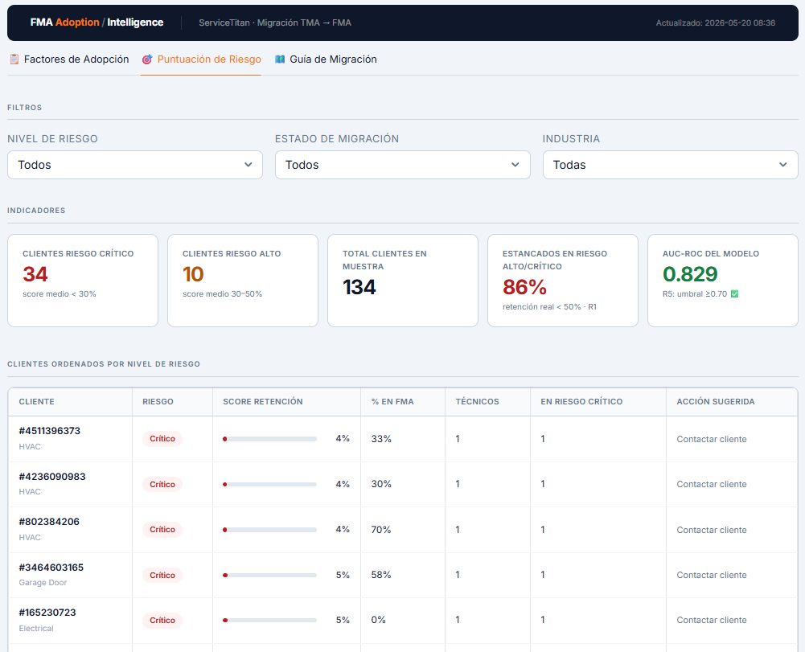
| Filtro | Efecto |
|---|---|
| Nivel de riesgo | Muestra solo los clientes del nivel seleccionado (Crítico, Alto, Medio, Bajo) ya que permite concentrar la vista en los casos más urgentes |
| Estado de migración | Filtra por el porcentaje de técnicos ya migrados (Partial, Minimal, Majority, Complete) |
| Industria | Filtra por sector del cliente |
Se presentan cuatro métricas ya que reflejan el estado de riesgo general de la cartera de clientes en la muestra filtrada.
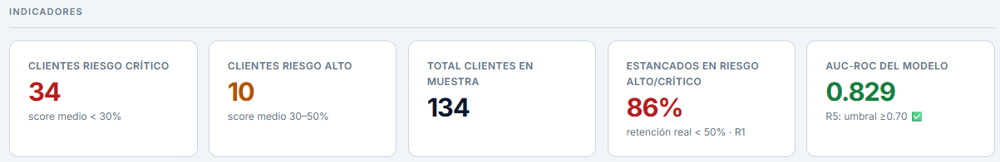
Se ordenan los clientes de menor a mayor score de retención ya que los que aparecen primero son los que requieren intervención más urgente.
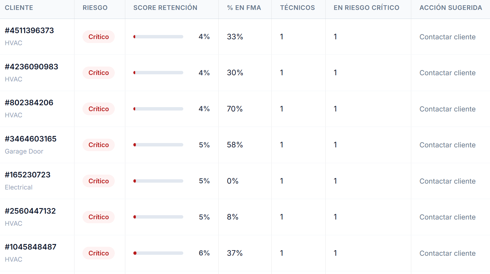
Escala de niveles de riesgo:
| Score | Nivel | Acción sugerida |
|---|---|---|
| < 30% | Crítico | Contactar cliente inmediatamente |
| 30-50% | Alto | Atención prioritaria en próximos 14 días |
| 50-70% | Medio | Monitorear en ciclo bisemanal |
| > 70% | Bajo | En buen camino — seguimiento estándar |
Se selecciona un cliente del menú desplegable ya que la tabla inferior muestra todos los técnicos de ese cliente con su score individual y sus factores SHAP determinantes.
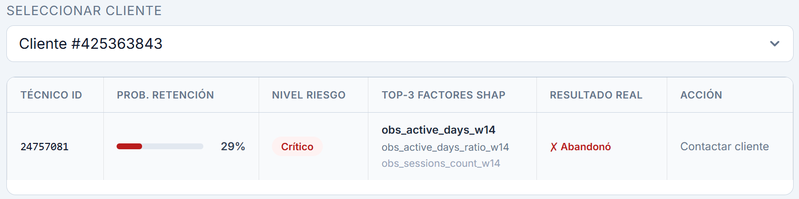
Se utiliza la columna Factores SHAP (top-3) ya que indica las tres variables que más influyen en el score de ese técnico específico. Esta información permite articular intervenciones concretas con el equipo de Customer Success ya que cada técnico tiene un perfil de riesgo diferente.
Se utiliza esta vista para definir qué acciones tomar con cada cliente según su situación actual de migración ya que la priorización basada en datos permite enfocar los recursos del equipo donde el impacto es mayor.
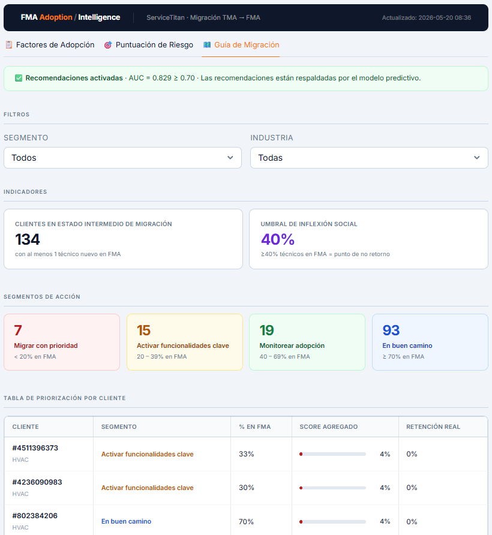
Se muestra un banner verde al inicio de la vista cuando el modelo supera el umbral de calidad (AUC ≥ 0.70) ya que esto confirma que las recomendaciones están respaldadas por el modelo predictivo y no son meramente orientativas.
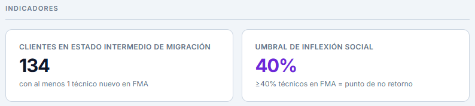
Se clasifica cada cliente en uno de cuatro segmentos según el porcentaje de sus técnicos que ya utilizan FMA ya que la acción recomendada difiere significativamente según el nivel de penetración de la plataforma.
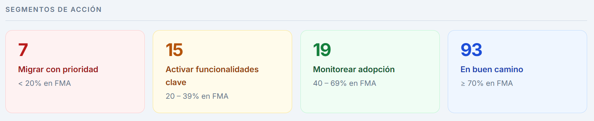
| Segmento | Criterio | Prioridad |
|---|---|---|
| Migrar con prioridad | < 20% de técnicos en FMA | Máxima — intervención inmediata |
| Activar funcionalidades clave | 20-39% en FMA | Alta — acelerar hasta superar el 40% |
| Monitorear adopción | 40-69% en FMA | Media — mantener ritmo y recuperar rezagados |
| En buen camino | ≥ 70% en FMA | Estándar — seguimiento rutinario |
Se interpreta el número dentro de cada tarjeta como la cantidad de clientes en ese segmento ya que permite dimensionar el esfuerzo requerido para cada categoría.
Se ordenan los clientes por score de riesgo dentro de cada segmento ya que los clientes con mayor riesgo dentro del mismo nivel de adopción deben atenderse primero.
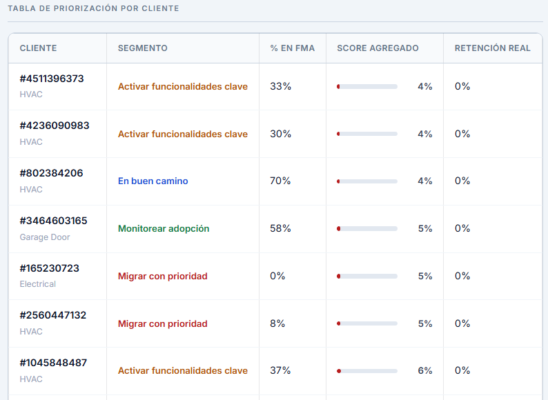
Se utiliza la columna Retención real para validar si el modelo está prediciendo correctamente ya que permite comparar el score del modelo con el resultado observado en los datos históricos.
Se presentan tres tarjetas ya que cada una detalla las acciones específicas recomendadas para los segmentos de mayor riesgo junto con el respaldo evidencial del modelo.
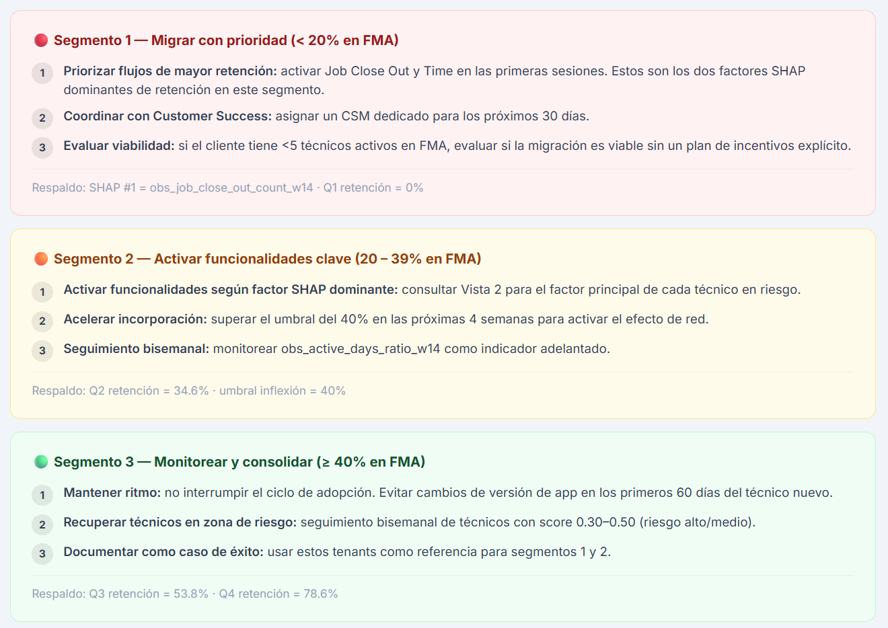
Se actualiza el análisis ejecutando el pipeline cada 14 días (bisemanal) ya que este es el ciclo de actualización definido para mantener las predicciones relevantes.
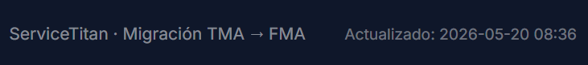
Para actualizar los datos se siguen estos pasos:
data/raw/ ya que estos contienen los datos fuente exportados de Snowflake.python pipeline.py ya que este paso regenera todos los archivos analíticos.python pipeline.py cada 14 días o bajo demanda ya que el proceso requiere los datos más recientes exportados desde Snowflake. La fecha de última actualización aparece en el encabezado del tablero.| Término | Definición |
|---|---|
| Adoptante sostenido | Técnico que registró 15 o más días activos en los 60 días posteriores al período de observación |
| Abandono | Técnico que no alcanzó el umbral de 15 días activos en 60 días |
| Score de retención | Probabilidad de que un técnico retenga FMA según el modelo, expresada como porcentaje entre 0% y 100% |
| SHAP | Método de interpretabilidad que cuantifica la contribución de cada variable al score del modelo, permitiendo identificar los factores determinantes por técnico |
| AUC-ROC | Métrica de calidad del modelo que mide su capacidad para distinguir correctamente entre técnicos que retienen y los que abandonan |
| Tenant | Cliente de ServiceTitan (empresa contratista) |
| Técnico | Empleado del cliente que usa FMA en el campo |
| TMA | Technician Mobile Application — aplicación anterior a FMA |
| FMA | Field Mobile App — plataforma de migración objetivo |
| Pipeline | Proceso automatizado que transforma los datos fuente en los indicadores del tablero |
| Umbral de inflexión social | Punto a partir del 40% de técnicos en FMA en el que la adopción tiende a auto-sostenerse por efecto de red |
| Período de observación | Los primeros 14 días de actividad de un técnico en FMA, que es la ventana usada por el modelo para generar el score |